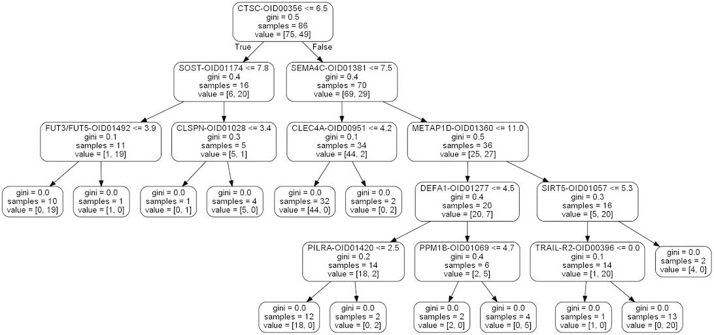

Introduction
“Olink Proteomics is a Swedish company (with a US-based laboratory located in Watertown, MA) dedicated to innovation, quality, rigor and transparency, providing outstanding products and services for human protein biomarker discovery. Our groundbreaking Olink panels for precision proteomics help scientists make research decisions more quickly and confidently through robust, multiplex biomarker analysis. Our high quality multiplex immunoassay panels help bring new insights into disease processes, improve disease detection, and contribute to a better understanding of biology.” (source: http://www.olink.com/)
Olink uses their proprietary Proximity Extension Assay (PEA) to detect over 1,100 unique proteins in human biological fluids, typically plasma or serum, where the output of the assay is reported in a relative protein concentration unit called NPX. NPX is a log2 transformation of DNA copy number generated from a quantitative polymerase chain reaction (qPCR) measurement. The NPX value is a direct translation of DNA copy number to amount in the biological sample. We will use a simulated dataset that was created by Olink to train other, experienced Data Scientists on how to analyze PEA generated data.


DATA
The simulated study that we have received contains two individual datasets -- that can be analyzed separately or together via a set of ‘bridge’ samples -- and an annotation file for each respective dataset. Each dataset has the same number of unique subjects, but the second dataset contains the ‘bridge’ samples that were analyzed in the first dataset. Each annotation file contains the following data: SampleID, Subject, Response, Site, Time, Project (indicating the respective dataset).
Dataset Details: 1. Clinical variables a) Three timepoints (Baseline; Week 6; Week 12) b) Site information (from sites A-E) c) Response status (Response or Non-Response) 2. The first dataset has 52 subjects, and 156 overall samples 3. The second dataset has another 52 subjects, but also has 16 ‘bridge’ samples from the first run (and thus has 172 samples)
ANALYSIS
Anova Test
An ANOVA test is a statistical analysis model that determine if experiment results are significant. Groups of data are tested to determine if there is a significant difference in the data and give an indication as to whether or not the null hypothesis is accepted or rejected.
Random Forest Model
Random forests or random decision forests are an ensemble learning method that can be used for classification that operate by constructing a multitude of decision trees at training time and outputting the class that is the mode of the classes (classification) or mean prediction (regression) of the individual trees. Random decision forests reduce the probabilty of overfitting training set, which is a common problem for decision trees.

TEAM

Ben Snyder
Aspiring data analyst currently enrolled in the Case Western Reserve University Data Analytics Bootcamp. Graduated with a Bachelor of Science degree in Communications Media from the Indiana University of Pennsylvania in 2018. Has a background in live sports production, video production, computer programming and assembly. Hopes to utilize the skills learned in this bootcamp to pursue a career in Data Science.

Chris Bock
Exemplary and uniquely skilled professional, with a demonstrated history of leading and working in the biotechnology industry, combining experience in customer facing roles, data science and biotechnology techniques. Looking to provide impactful insights and conclusions that allow for informed decisions that move existing technology forward and drive growth. Recently completed Case Western Reserve University Data Analytics and Visualization Bootcamp. Skilled in Python, Pandas, R, SQL, Tableau, Machine Learning (PySpark, TensorFlow) and data visualization tools such as JavaScript and D3.js. Over two decades of experience in assay development, protein chemistry, qPCR, microarray hybridization, quality control, technical and bioinformatic customer support, and management.

Dr. Debra Fenty
Hardworking and highly motivated Data Analyst with a passion for big data and problem solving. My analytic skills include, Python, SQL, R and Javascript. I am an effective leader who believes that collaboration, communication and transparency are key to creating an efficient team. I am a dedicated leader, adept at collecting, analyzing and creating clear, concise visualizations to present data outcomes.

Frankie Wong
Determined, focused, and always willing to go the extra mile to accomplish my goals. I graduated from Case Western Reserve University in 2018 with a Bachelor of Engineering degree in biomedical engineering. I have a background in computer science and I am currently enrolled in Case Western Reserve University Data Analytics Bootcamp. Skilled in web development, data cleanup, storage, analytics, visualization, and advanced learning model. I am skilled in various coding languages and data visualization tools, and always eagered to continue learn and expand my skillset. Individual hard work is just important as effective teamwork and I strongly believe I excel in both. I am always looking to challenge myself and those around me in order to produce high quality work. I want to pursue a career in data science and will continue to work hard everyday to improve and further my education.